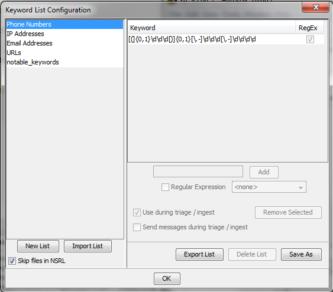
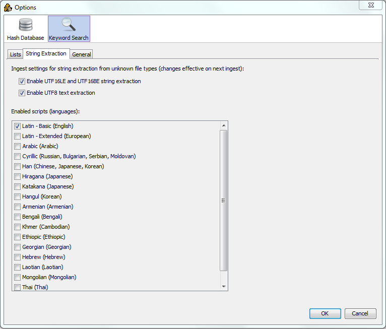
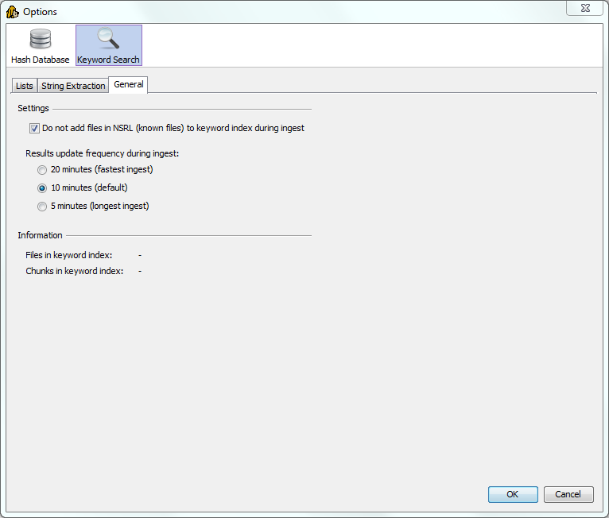

The keyword search configuration dialog has three tabs, each with it's own purpose:
To create a list, select the 'New List' button and choose a name for the new Keyword List. Once the list has been created, keywords can be added to it. Regular expressions are supported using Java Regex Syntax. Lists can be added to the keyword search ingest process; searches will happen at regular intervals as content is added to the index.
Autopsy supports importing Encase tab-delimited lists as well as lists created previously with Autopsy. For Encase lists, folder structure and hierarchy is currently ignored. This will be fixed in a future version. There is currently no way to export lists for use with Encase. This will also be added in future releases.
The string extraction setting defines how strings are extracted from files from which text cannot be extracted because their file formats are not supported. This is the case with arbitrary binary files (such as the page file) and chunks of unallocated space that represent deleted files.
When we extract strings from binary files we need to interpet sequences of bytes as text differently, depending on the possible text encoding and script/language used. In many cases we don't know what the specific encoding / language the text is be encoded in in advance. However, it helps if the investigator is looking for a specific language, because by selecting less languages the indexing performance will be improved and a number of false positives will be reduced.
The default setting is to search for English strings only, encoded as either UTF8 or UTF16. This setting has the best performance (shortest ingest time).
The user can also use the String Viewer first and try different script/language settings, and see which setting gives satisfactory results for the type of text relevant to the investigation. Then the same setting that works for the investigation can be applied to the keyword search ingest.
The hash database ingest service can be configured to use the NIST NSRL hash database of known files. The keyword search advanced configuration dialog "General" tab contains an option to skip keyword indexing and search on files that have previously marked as "known" and uninteresting files. Selecting this option can greatly reduce size of the index and improve ingest performance. In most cases, user does not need to keyword search for "known" files.
To control how frequently searches are executed during ingest, user can adjust the timing setting available in the keyword search advanced configuration dialog "General" tab. Setting the number of minutes lower will result in more frequent index updates and searches being executed and the user will be able to see results more in real-time. However, more frequent updates can affect the overall performance, especially on lower-end systems, and can potentially lengthen the overall time needed for the ingest to complete.
Lists tab:
String Extraction tab:
General tab:
